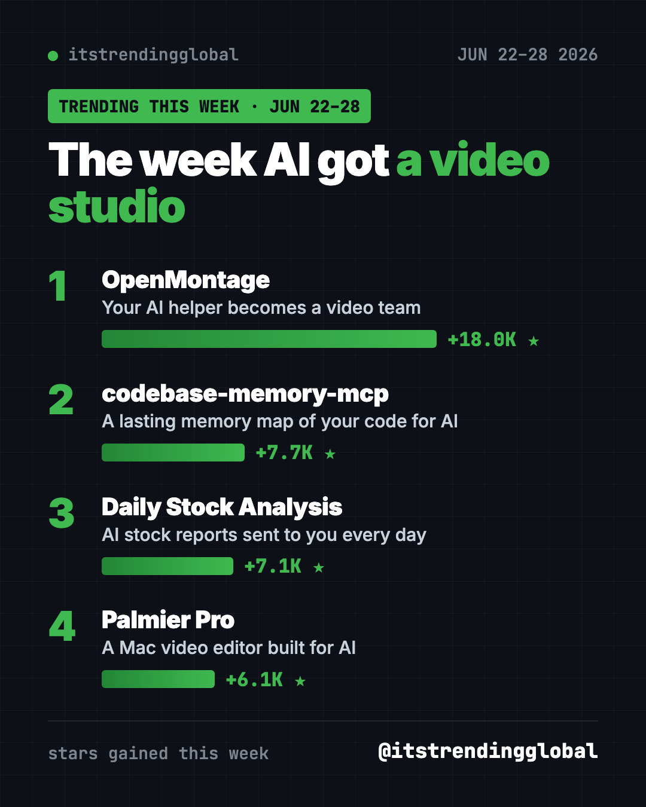
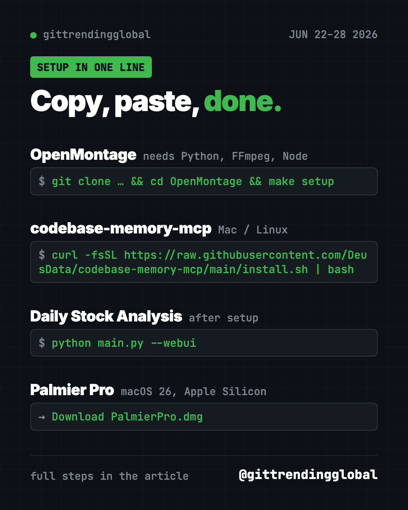

Home › Tools and repos › GitHub trending this week
Most Starred GitHub Repos June 22-28, 2026
- Published 15 Oct 2026
- Updated 16 Oct 2026
- 6 min read
- By the ITG Now team
The most starred GitHub repos June 22-28, 2026 were led by OpenMontage, which gained 18,000 stars by turning an AI coding helper into a video team. codebase-memory-mcp, Daily Stock Analysis and the Palmier Pro editor rounded out our list.
Video was the big story. Two of the four picks make or edit video with AI. The other two give your AI a memory of your code and send you a daily stock report.
Key takeaways
- OpenMontage researches, scripts, narrates, edits and renders a video from a plain description.
- codebase-memory-mcp keeps climbing. It gives AI helpers a lasting map of your code.
- Daily Stock Analysis sends you an AI-written report on the stocks you follow, every day.
- Palmier Pro is a Mac video editor where AI helpers can work right on the timeline.
- We skipped Agent-Reach again, for the same reason as last week.

Quick comparison
| Repo | What you get | For | Stars this week | Cost |
|---|---|---|---|---|
| OpenMontage | Finished videos from a prompt | Creators, teachers | +18.0K | Free, optional paid keys |
| codebase-memory-mcp | Code memory for AI helpers | People with big projects | +7.7K | Free |
| Daily Stock Analysis | Daily AI stock reports | Self-directed investors | +7.1K | Free, AI model may cost |
| Palmier Pro | AI-ready Mac video editor | Mac video editors | +6.1K | Download on GitHub, newer versions closed source |
Star gains cover June 22-28 only. Totals were checked on October 16, 2026.
1. OpenMontage: describe a video, get a video
Stars: +18.0K this week · about 68.5K total
What it is: A free, open-source video production system that runs inside your AI coding helper. You say what you want, and the AI researches the topic, writes a script, adds a voice, music and captions, then renders the file. The project lists 12 production pipelines and more than 100 tools.
Who it's for: Small creators, teachers and marketers who need explainer videos without a team.
Everyday use: "Make a 60-second animated explainer on how compound interest works."
Install it. You need Python 3.10+, FFmpeg and Node.js 18+. Copy and paste this:
git clone https://github.com/calesthio/OpenMontage.git
cd OpenMontage
make setup
make demo
make demo renders sample videos with no keys at all.
Or ask your AI helper:
Set up OpenMontage from github.com/calesthio/OpenMontage, run the demo, and make me a 45-second explainer using free tools only.
See OpenMontage on GitHub · Read our full guide
2. codebase-memory-mcp: still growing
Stars: +7.7K this week · about 46.7K total
What it is: A local tool that maps your code so your AI helper can search it without reading every file. It works with Claude Code, Codex and other helpers.
Everyday use: Ask "where does this app send emails?" and get a direct answer.
Install it on Mac or Linux. Copy and paste this:
curl -fsSL https://raw.githubusercontent.com/DeusData/codebase-memory-mcp/main/install.sh | bash
Or ask your AI helper:
Install codebase-memory-mcp from github.com/DeusData/codebase-memory-mcp and index this project for me.
See codebase-memory-mcp on GitHub

3. Daily Stock Analysis: an AI stock report in your inbox
Stars: +7.1K this week · about 66.4K total
What it is: An AI system that pulls prices, charts and news for stocks you pick. It covers markets in China, Hong Kong, the US, Japan, Korea and Taiwan. Each day it sends a "decision dashboard" to Telegram, Discord, Slack, email and other apps. The README is in Chinese, with an English version linked.
Who it's for: People who already pick their own stocks and want a daily summary.
Everyday use: Get one message each morning summing up news on the five stocks you own.
Install it. The README recommends running it free on GitHub Actions. To run it on your own computer, copy and paste this:
git clone https://github.com/ZhuLinsen/daily_stock_analysis.git && cd daily_stock_analysis
pip install -r requirements.txt
cp .env.example .env
python main.py --webui
Add your AI model key and stock list to the .env file first.
Or ask your AI helper:
Set up Daily Stock Analysis from github.com/ZhuLinsen/daily_stock_analysis in English, track AAPL and MSFT, and send the report to my email.
⚠️ Heads up: This is a research tool, not financial advice. Its "buy" and "sell" labels come from an AI and can be wrong. Never trade on them alone.
See Daily Stock Analysis on GitHub
4. Palmier Pro: a Mac video editor built for AI
Stars: +6.1K this week · about 14.6K total
What it is: A video editor for Macs, written from scratch. It can generate clips with AI models inside the timeline. Claude, Codex or Cursor can also connect and edit the same project with you.
Who it's for: Mac users on Apple silicon running macOS 26 (Tahoe) or later.
Everyday use: Ask Claude to trim the pauses out of your interview while you watch the timeline.
Install it. Download PalmierPro.dmg from the latest release. Open the app, then connect Claude Code. Copy and paste this:
claude mcp add --transport http palmier-pro http://127.0.0.1:19789/mcp
Or ask your AI helper:
Connect Claude Code to Palmier Pro on this Mac and remove every silence longer than one second from my open project.
⚠️ Heads up: Versions up to 0.7.6 are open source under GPLv3. The README says later releases are closed source. It doesn't list prices for the AI generation, so check before you generate.
Which one should you try first?
- You want videos without editing: OpenMontage. Start with
make demo. - You edit video on a new Mac: Palmier Pro.
- You follow the stock market: Daily Stock Analysis, as a reading aid only.
- Your AI helper gets lost in your code: codebase-memory-mcp.
See the month's bigger picture in the top GitHub repos of June 2026 and June 2026 in AI news. Next: the week of June 29.
FAQ
What were the most starred GitHub repos June 22-28, 2026?
OpenMontage led with about 18,000 new stars. codebase-memory-mcp, Daily Stock Analysis and Palmier Pro followed on our list.
Is OpenMontage a free AI tool for video creation?
Yes. It's free and open source, and the demo needs no keys. Extra keys for premium voices or AI video clips are optional and may cost money.
Can Daily Stock Analysis trade for me?
No. It writes reports and sends them to you. Any buying or selling is your own decision.
Does Palmier Pro work on Windows?
No. The README says it needs macOS 26 or later on an Apple silicon Mac.
Keep reading

Trending GitHub Repos October 2026: The Top 5 So Far
The trending GitHub repos of October 2026 so far: a free Photoshop-style editor, an AI art studio, a big AI model for gaming PCs and more, explained.

Trending GitHub Repos This Week, Oct 5 2026: The Top 5
Trending GitHub repos this week Oct 5 2026: Matt Pocock's skills, the openGym workout tracker, e2e testing, HyperFrames video and claude-mem memory.

GitHub Trending September 28, 2026: Hindsight and Paperclip
GitHub trending September 28 2026: Hindsight, Paperclip, NVIDIA's OpenShell and a free 542-lesson AI course, with setup steps for each.